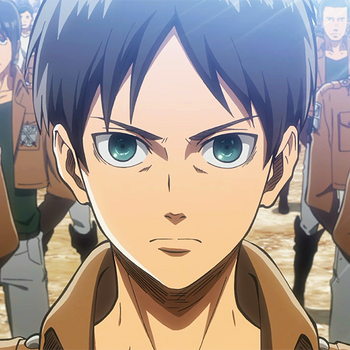
Eren Yeagger est le protagoniste de Shingeki no Kyojin. Adolescent impulsif et brûlé par la haine des Titans après un drame qui a marqué son enfance, il rêve avant tout de liberté. Son caractère obstiné et sa volonté de fer le poussent à rejoindre le Bataillon d’exploration, prêt à tout pour affronter les monstres qui menacent l’humanité et découvrir ce qui se cache au-delà des murs.
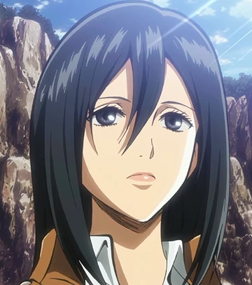
Mikasa Ackerman est l’un des personnages centraux de Shingeki no Kyojin. Sœur adoptive d’Eren, elle se distingue par sa maîtrise exceptionnelle du combat et sa force hors du commun. Calme, réservée et d’une loyauté absolue, elle consacre sa vie à protéger ceux qu’elle aime, en particulier Eren, tout en devenant l’une des soldates les plus redoutables du Bataillon d’exploration.
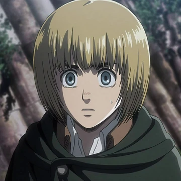
Armin Arlert est l’ami d’enfance d’Eren et de Mikasa dans Shingeki no Kyojin. Plus fragile physiquement que ses compagnons, il se démarque par son intelligence exceptionnelle et son sens stratégique. Rêveur et curieux du monde extérieur, il compense sa faiblesse par une réflexion brillante et devient un pilier essentiel du Bataillon d’exploration grâce à ses idées et à sa capacité à trouver des solutions là où d’autres ne voient que des impasses.
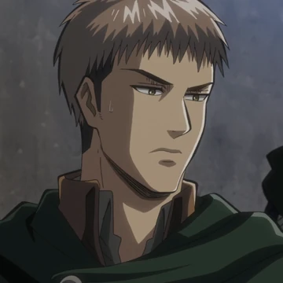
Jean Kirstein est un personnage important de Shingeki no Kyojin. Au départ un peu arrogant et pragmatique, il rêve d’une vie confortable au sein de la Brigade spéciale plutôt que de risquer sa peau contre les Titans. Intelligent et doué au combat, il évolue au fil de l’histoire pour devenir un soldat plus mature et responsable, souvent en rivalité avec Eren, tout en se révélant un atout précieux pour le Bataillon d’exploration.
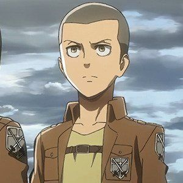
Conny Springer est un membre du 104e bataillon d’entraînement dans Shingeki no Kyojin. Originaire d’un petit village, il se montre souvent léger, un peu niais et plein d’humour, ce qui apporte une touche de détente au groupe. Malgré son manque de sérieux apparent, Conny se révèle loyal, courageux et déterminé, prêt à tout pour protéger ses camarades une fois engagé dans le Bataillon d’exploration.
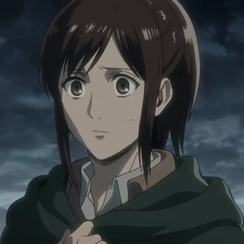
Sasha Braus est une membre du 104e bataillon d’entraînement dans Shingeki no Kyojin. Originaire d’un village de chasseurs, elle se distingue par son appétit légendaire et son obsession pour la nourriture, surtout la viande. Excellente tireuse et pleine d’énergie, elle apporte souvent une touche d’humour au groupe tout en se révélant une soldate courageuse et déterminée au sein du Bataillon d’exploration.
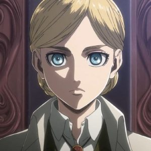
Historia Reiss (d’abord connue sous le nom de Krista Lenz) est une membre du 104e bataillon d’entraînement dans Shingeki no Kyojin. Douce, altruiste et toujours prête à aider les autres, elle apparaît comme l’une des figures les plus bienveillantes de sa promotion. Derrière cette image se cache pourtant une personnalité plus complexe et un lourd secret lié à ses origines, qui la placera progressivement au cœur des enjeux politiques et historiques du monde des murs.
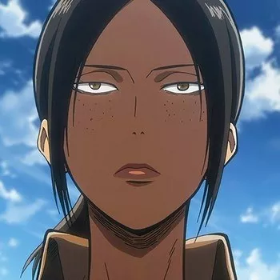
Ymir est une membre du 104e bataillon d’entraînement dans Shingeki no Kyojin. Franc-parler, sarcastique et au caractère bien trempé, elle se montre particulièrement protectrice envers Historia. Derrière son attitude insolente se cache un passé mystérieux… ainsi que le pouvoir du Titan Mâchoire, qui en fait l’une des figures les plus intrigantes et imprévisibles de sa promotion.
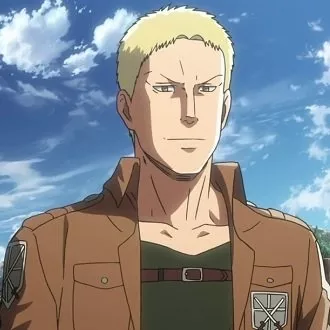
Reiner Braun est un membre du 104e bataillon d’entraînement dans Shingeki no Kyojin. Solide, fiable et protecteur, il joue souvent le rôle de grand frère auprès de ses camarades. Doté d’une grande force physique et d’un sens du devoir marqué, il s’impose comme l’un des soldats les plus compétents de sa promotion et rejoint le Bataillon d’exploration aux côtés d’Eren et des autres.
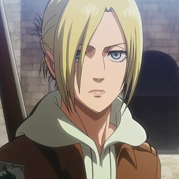
Annie Leonhart est une membre du 104e bataillon d’entraînement dans Shingeki no Kyojin. Réservée, froide et solitaire, elle se distingue par son talent exceptionnel en combat rapproché. Peu sociable et souvent distante avec les autres, elle privilégie l’efficacité et la discrétion, ce qui en fait une combattante redoutable et difficile à cerner.
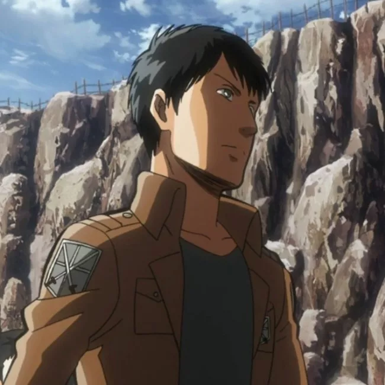
Bertolt Hoover est un membre du 104e bataillon d’entraînement dans Shingeki no Kyojin. Grand, discret et réservé, il se tient souvent en retrait et parle peu. Timide et hésitant, il contraste avec des personnalités plus affirmées, mais reste un soldat compétent qui évolue aux côtés de ses camarades au sein du Bataillon d’exploration.
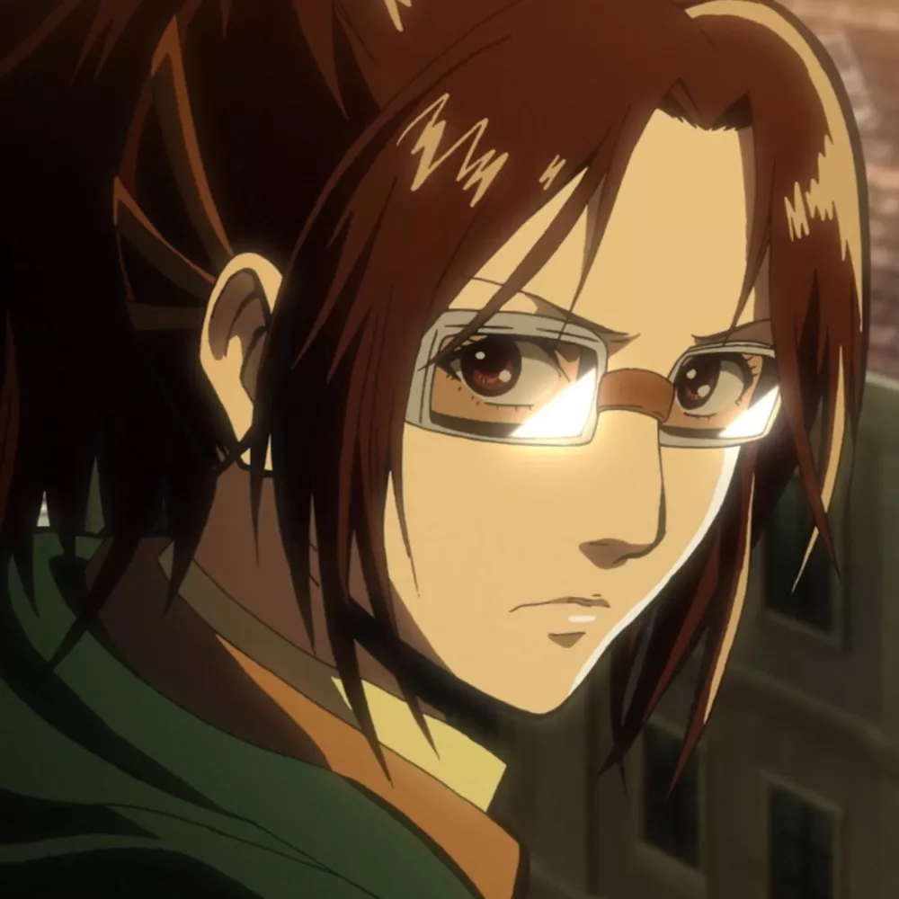
Hansi Zoe est une officier du Bataillon d’exploration dans Shingeki no Kyojin. Passionnée et excentrique, elle se distingue par son obsession pour l’étude des Titans et sa curiosité scientifique sans limites. Brillante, inventive et parfois un peu déjantée, elle apporte une énergie unique au groupe tout en jouant un rôle clé dans la compréhension des mystères qui entourent ces créatures.
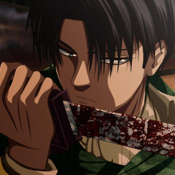
Livai Ackerman est le capitaine du Bataillon d’exploration dans Shingeki no Kyojin. Considéré comme le soldat le plus fort de l’humanité, il se distingue par sa maîtrise exceptionnelle du combat et son efficacité redoutable face aux Titans. De petite taille, froid, exigeant et obsédé par la propreté, il impose le respect par sa discipline et son sang-froid, tout en restant profondément loyal envers ses hommes.
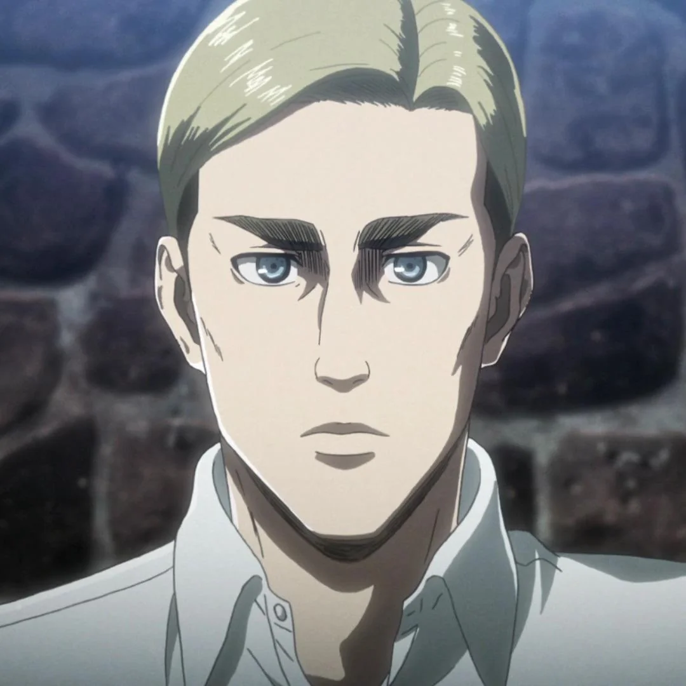
Erwin Smith est le commandant du Bataillon d’exploration dans Shingeki no Kyojin. Leader charismatique et stratège exceptionnel, il inspire le respect et le dévouement de ses soldats. Visionnaire et prêt à prendre des décisions difficiles, voire cruelles, pour faire avancer l’humanité, il incarne la détermination absolue face à l’inconnu et aux Titans.
Retour page d'accueil